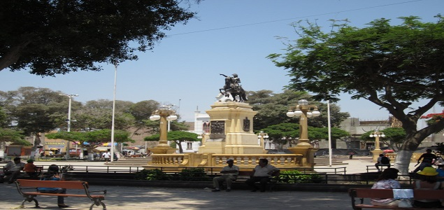

La Provincia fue creada mediante Ley del 19 de octubre de 1900. La denominación de Pisco, proviene de la voz quechua "pisqu", que significa pájaro o ave. Y los antiguos pobladores le dieron este nombre debido a la existencia de numerosas aves que hay en el mar tanto en el puerto, en la bahía, península e islas. Cabe precisar que el 23 de noviembre de 1640, la provincia de Pisco fue fundada por el virrey del Perú Pedro Toledo y Leyva.
Don Fermín Tanguis personaje de gran relevancia, tanto por su aporte en el campo de la investigación agrícola como para la economía nacional con el reconocido algodón Tanguis. En ese mismo sentido don Víctor Posso, realizó importante investigación.

La provincia de Pisco tiene la mayor porción de litoral costero de la región Ica. Sobresalen los accidentes costeros de la península de Paracas y las bahías de Paracas e Independencia; lugares donde se encuentra la Reserva Nacional de Paracas.
El río más importante de la provincia es el río Pisco, formando el amplio valle del mismo nombre. El paisaje desértico domina casi toda la zona de la provincia.
La provincia de Pisco es muy activa económicamente:
Restos Arqueológicos de Tambo Colorado – Que se encuentran en el distrito de Humay. Su nombre se debe al tipo de edificación que presentaba además de por las tonalidades rojizas de sus muros. Se cree que aquel habría sido un sitio de residencia para el Inca para aquellos periodos cuando este realizara sus viajes hacia esta zona del Imperio, y que el tambo era el lugar de descanso de su séquito.
Reserva Nacional de Paracas – En el distrito del mismo nombre. Aquella presenta una extensión de 335 000 hectáreas. Su grado de Reserva se le fue otorgado en el año 1975 con la intención de conservar la diversidad Biológica que presenta así como los más de 114 sitios arqueológicos que se encuentran registrados en su territorio.